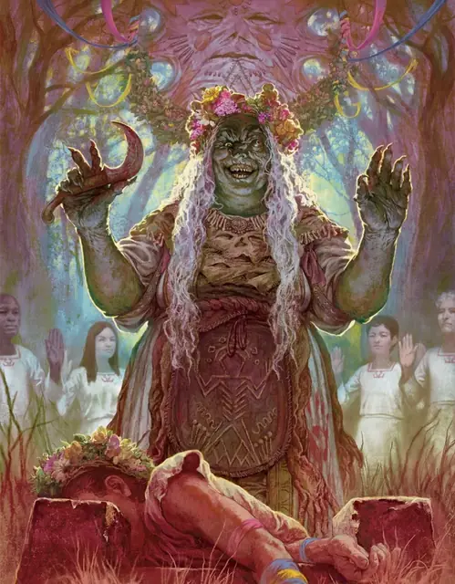

Матерь Лоринда
Mother Lorinda
Средняя Фея, Нейтральная Злая, именной НИП

Класс Защиты 18 Инициатива +7 (17)
Хиты 105 (14к8 + 42)
Скорость 30 футов, Плавания 30 футов
| мод | спас | ||
|---|---|---|---|
| СИЛ | 18 | +4 | +7 |
| ЛОВ | 13 | +1 | +4 |
| ТЕЛ | 16 | +3 | +6 |
| мод | спас | ||
|---|---|---|---|
| ИНТ | 13 | +1 | +1 |
| МДР | 17 | +3 | +6 |
| ХАР | 15 | +2 | +2 |
Иммунитеты Испуганный, Истощение, Очарованный
Чувства Тёмное зрение 60 футов, пассивное Восприятие 16
Языки Общий, Сильван, Эльфийский
Опасность 8 (3 900 опыта или 5 000 опыта в Домене; БВ +3)
Особенности
Восстановление Тёмной владычицы. Спустя 1к10 недель после смерти Лоринда возрождается с полными Хитами в где-то в Тепеште.
Легендарное сопротивление (3/день, или 4/день в Домене). Если Лоринда проваливает спасбросок, она вместо этого может в нём преуспеть.
Амфибия. Лоринда может дышать как воздухом, так и под водой.
Подражание. Лоринда может подражать звукам животных и голосам Гуманоидов. Слышащее такие звуки существо может понять, что это подражание, только если преуспеет в проверке Мудрости (Проницательность) Сл 15.
Действия
Мультиатака. Лоринда совершает две атаки Тавром Матери.
Тавро Матери. Бросок рукопашной атаки: +7, досягаемость 5 фт. Попадание: 8 (1к8 + 4) Дробящего урона плюс 5 (1к10) урона Огнём.
Сотворение заклинаний. Матерь Лоринда сотворяет одно из следующих заклинаний, не нуждаясь в Материальных компонентах (заклинательная характеристика — Мудрость, Сл спасброска заклинаний 14, +6 к попаданию атак заклинаний):
Неограниченно: Луч болезни, версия 3-го уровня, Малая иллюзия, Невидимость, Невидима, Очарование личности, Пляшущие огоньки, Смена обличья
1/день каждое: Гадание, Наблюдение, Невидимый слуга, Рост растений, Усыхание
Бонусные действия
Лик Матери (1/день). Лоринда перевоплощается в Матерь — божество, почитаемое народом Тепешта, — на 8 часов. Её параметры не меняются в зависимости от формы. Любое снаряжение, которое она носит или несёт, не трансформируется. Находясь в форме Матери, Лоринда может Бонусным действием использовать Сотворение заклинаний (Очарование личности). Лоринда возвращается в истинную форму, если её Хиты опускаются до 50 или меньше. Когда Лоринда возвращается в истинную форму, все существа в 30-футовой Эманации, исходящей от Лоринды, подвергаются следующему эффекту. Спасбросок Мудрости: Сл 14 (Конструкты и Нежить преуспевают в спасброске автоматически). Провал: Цель Испугана на 1 минуту. Испуганная цель совершает спасброски с Помехой.
Легендарные действия
У этого существа есть 3 использования Легендарных действий (или 4 использования в Домене); оно может немедленно после окончания хода другого существа потратить одно использование, чтобы совершить одно из следующих действий. Существо восполняет все потраченные использования в начале каждого своего хода.
Клеймение. Лоринда телепортируется в видимое ей незанятое пространство в пределах 30 футов и совершает одну атаку Тавром Матери.
Гнетущее присутствие. Лоринда сотворяет Замедление (заклинательная характеристика — та же, что для Сотворения заклинаний). Лоринда не может совершить это действие снова до начала своего следующего хода.
Бонус мастерства +3
Матерь Лоринда
Тёмная владычица, что требует обожания
Матерь Лоринда жаждет семьи превыше всего, не осознавая, что сама разрушила каждую семью, которая у неё была. Эта древняя зелёная карга, породительница чудовищ, одержима противоестественными материнскими устремлениями.
Поколениями селяне Тепешта видели в Лоринде не могущественную ведьму, а богиню земли и плодородия, которую они называют Матерью. Лоринда не разубеждает своих хрупких смертных последователей в их надуманных обрядах. Крестьяне добровольно приносят жертвы для её несовершенных магических пародий на жизнь, а их почитание постепенно смягчает разрушительные выбросы магии, что следуют за её неудачами.
Ходячая костяная башня Лоринды, Бурбль, бродит по просторам Тепешта. Ищущие её встречают рассеянную, но обманчиво хитрую каргу, прижимающую к себе гротескных кукол своей семьи. Она оплакивает потерю сестёр, Лавиды и Летиции, ни словом не признавая, что они живы и томятся у неё в плену. Часто она говорит о своей дочери Лурше — этим именем она из раза в раз нарекает свои чудовищные творения.
Когда Лоринда навещает Виктал, она появляется в иллюзорном обличье Матери — древней могучей женщины в плаще, будто из шкуры мотылька, и с горящей ветвью в руках. Чтобы доказать любовь, она призывает людей жертвовать что-то: еду, изделия, левые глаза и саму жизнь. Иногда её появление внезапно и ужасающе — например, когда она как по волшебству вылезает из пустой глазницы последователя.
Лоринда ищет новые способы создать постоянную семью, и всегда по-разному: в виде больших жертв, украденной фейской магии, странных усыновлений или всевозможных сверхъестественных сделок.
История Матери Лоринды
Сёстры Лоринда, Лавида и Летиция Миндефиск влачили жалкую жизнь на лесистой окраине суровых земель. Их жестокая семья считала девочек феями-подменышами и заставляла работать от заката до рассвета. Жестокие братья и отец годами измывались над отчаявшимися сёстрами, пока те не выдержали и, случайно повстречав злого странника, убили его. Они расчленили тело и подали останки ничего не подозревающим родным. Так начался круговорот убийств и каннибализма, длившийся годами.
Преступления сестёр Миндефиск раскрылись, когда все три влюбились в одного обаятельного незнакомца. Они перессорились и, не желая ни уступать, ни делиться, убили незнакомца на глазах у объятой ужасом семьи. Терять им было уже нечего, и сёстры вырезали оставшихся родичей, пока вокруг поднимались Туманы.
Ужас, порождённый сёстрами Миндефиск, лишь усилился в Доменах Ужаса. Очутившись в Тепеште, они обнаружили, что стали каргами. Поколениями и смертные, и феи знали их как переменчивых чудотвориц. К ним часто приходили отчаявшиеся семьи, готовые отдать многое за ведьмокровых детей.
Со временем Лоринду заворожило то, как другие обретают счастье в семье. Она умоляла сестёр помочь ей создать ребёнка, но Лавида и Летиция отказались, ненавидя саму мысль, что одна из них обретёт больше счастья, чем остальные.
Ополчившись на сестёр, Лоринда втайне собрала из звериных потрохов и тёмной магии чудовище. С помощью новоявленной дочери карга заточила сестёр в волшебный котёл и похитила их силы. Однако радость Лоринды от своего творения длилась недолго — магия чудовища быстро иссякла, и оно сгнило. С тех пор Лоринда пытается создать семью, производя в экспериментах бесчисленных монстров, и посещает жителей Виктала в обличье Матери. За многие поколения это породило в Виктале культ Матери, но ни на шаг не приблизило Лоринду к той прочной семейной связи, которой она жаждет.
Домен Матери Лоринды
Тепешт, домен Лоринды, изменяется из-за её присутствия, что создаёт следующие эффекты:
• Закрытие границ. Когда Лоринда находится в домене, она способна по желанию закрывать или открывать границы Тепешта. Когда границы закрыты, в Туманах вокруг Тепешта бушует яростная буря. Существо, впервые за ход входящее в Туманы или начинающее в них ход, должно совершить спасбросок Силы Сл 15; при провале оно получает 9 (2к8) урона Электричеством и отталкивается на 30 футов в сторону Тепешта. Существо совершает этот спасбросок только один раз за ход.
• Очи Матери. Существо, пожертвовавшее Матери глаз, может совершить действие Магия, чтобы помолиться ей. Когда оно так делает, Лоринда может начать видеть глазами существа и слышать то же, что слышит оно, до начала своего следующего хода, получая преимущества особых чувств, которыми может обладать существо.
• Солнце и бури. Пока Лоринда находится в домене, она может сотворять заклинание Власть над погодой, не нуждаясь в Материальных компонентах (заклинательная характеристика — та же, что для её действия Сотворение заклинаний). При сотворении заклинания таким образом Лоринда может управлять погодой в пределах 5 мили от себя, находясь как внутри помещения, так и на открытом воздухе.
Если Лоринда умирает, все эти эффекты мгновенно исчезают. Они возникают вновь, если Лоринда возрождается (см. Восстановление Тёмной владычицы).